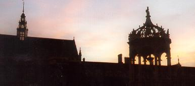
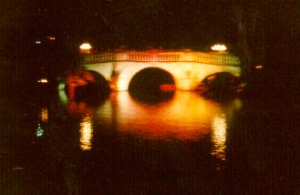
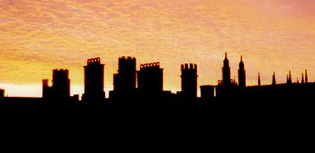

| Негадано приходить н╕ч
Немов прилив у глибокому мор╕ ╥╖ не встр╕неш в╕ч-на-в╕ч - Тисячами розкидан╕ ╖╖ оч╕-зор╕. |
 |
| Та все ж вона глибоко особиста
Наш╕ сни - то ╖╖ почуття Фантастична, безумне намисто Накида╓ на наше буття. |
 |
| Ми вважа╓мо що спимо ночами
Та д╕йсне життя - п╕д м╕сячним сном Н╕чн╕ мр╕╖ наст╕льки яскрав╕ Що помирають п╕д ран╕шн╕м склом. |
 |